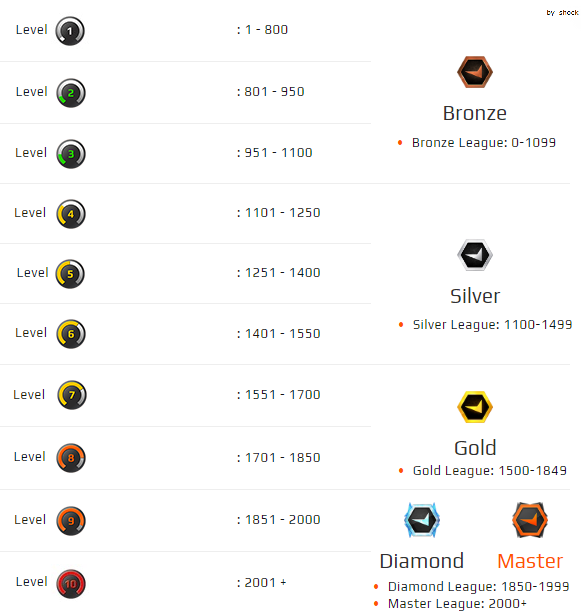

Présentation
Counter-Strike: Global Offensive est un jeu de tir à la première personne multijoueur en ligne basé sur le jeu d'équipe développé par Valve Corporation
Mode
Le jeu est divisé en huit modes, qui sont les suivants : Occasionnel, Démolition, Sniper volant, Match à mort par équipe, Course à l'armement, Zone de Danger, Compétitif et Wingman.
Broken Fang
L'Opération Broken Fang Accessible pour 12,75 €, cette nouvelle opération reprend le fonctionnement des précédentes : vous l'achetez et recevez un badge en bronze, que vous pouvez faire monter jusqu'au niveau diamant en accomplissant des missions variées chaque semaine. Chaque mission accomplie vous procure des étoiles qui, en plus d'augmenter le niveau de votre badge, donnent accès à des récompenses cosmétiques en jeu : nouveaux agents nouveaux graffitis nouvelle caisse de skins (une) et nouveaux skins (trois collections différentes, en plus de la caisse) nouvelles "pièces de couture" (patches dans la version originale), en gros, des trucs à coller sur la tenue de votre personnage, reprenant les différents niveaux du matchmaking
Description
L'opération vous permet aussi d'avoir accès à de nombreuses nouvelles statistiques individuelles concernant vos performances en jeu, aussi bien liés à vos kills et à vos morts qu'à vos armes favorites, aux maps où vous gagnez le plus ou aux parties du corps que vous touchez le plus lorsque vous tirez. Vous pourrez même voir vos heatmaps, c'est-à-dire vos zones de chaleur sur les différentes cartes : là où vous mourrez le plus, là où vous tuez le plus, etc. Bref, de quoi s'amuser pendant des heures. Enfin, si vous décidez d'aller jouer en Matche compétitif dans la queue regroupant les joueurs possédant l'opération, vous aurez la possibilité de veto les maps, en concertation (hum) avec votre équipe avant le début d'un match. Mod retake Cette mise à jour inclut également un mod retake, joliment nommé (ou pas) "Reprises de contrôle" en français, accessible à tous. Pas besoin d'acheter l'opération pour y jouer. Dans ce mod qui se présente comme un jeu d'armes (pas de validation de votre participation avant le début d'un match et vous pouvez quitter en cours de partie sans conséquence), une équipe de trois terroristes affronte une formation de quatre CT. Le round commence au moment où la bombe est plantée. Au début de chaque round, le jeu propose deux ou trois configurations d'armes et de stuff à chaque joueur, qui peut choisir ce qu'il préfère. La première équipe à atteindre 8 rounds l'emporte. Franchement, c'est cool. Nouvelles maps Valve était déchaînée et en profite pour inclure six nouvelles maps dans le jeu : Ancient, Engage et Apollo dans les mods Amical, Occasionnel et Match à mort Guard et Elysion en Wingman Frostbite en Danger Zone
À propos de Faceit
Faceit est une société de production et une plate-forme indépendante pour les compétitions professionnelles au sein de jeux vidéo multijoueurs en ligne, qui a été fondée à Londres en 20121. Elle a administré des ligues de sports électroniques sur des jeux tels que Counter-Strike: Global Offensive, League of Legends, Rocket League, Tom Clancy's Rainbow Six Siege et DOTA 2.
Site Internet
Cliquer sur Faceit pour vous redirigez sur le site officiel Faceit
Grade Faceit

Les grades compétitif
Les grades compétitif sont diviser en trois niveaux de Silver 1 à Silver Elite Master , ce sont principalement des joueurs débutants. Dans le second niveau de Gold Nova 1 à Master Guardian Elite 2 ce sont des jouers avec un niveau moyen et enfin le dernière niveau sont des jouers forts et très fort à partir de Legendary Eagle Master jusqu'a Global Elite.
Grade Wingman
Le mode de jeu Wingman se compose de 2 contre 2 matchs compétitifs sur des cartes avec un site de bombe, un format de jeu best-of-16 et un groupe de compétences Wingman spécial. Les règles sont similaires à celles de la compétition, mais le mode de jeu se déroule dans des cartes «compactes» avec un seul site de bombes. Par rapport aux cartes originales, les versions Wingman sont plus petites, la plupart de la carte étant coupée par des murs invisibles, et les apparitions sont beaucoup plus rapprochées du site de la bombe. La minuterie ronde est de 1 minute et 30 secondes.
Grade Zone de Danger
Danger Zone est un mode de bataille royale dans lequel les joueurs récupèrent de l'équipement et se battent les uns avec les autres dans une arène de combat rétrécie, et le dernier joueur (ou équipe de joueurs) survivant gagne. Le mode a un maximum de 18 joueurs par partie, en solo ou en duos. La zone de danger est définie sur de grandes cartes ouvertes exclusives au mode. La carte est divisée en hexagones. Au début d'une partie, les joueurs doivent choisir une zone de la carte à partir de laquelle le joueur va apparaître. Une fois le jeu commencé, les joueurs seront rappelés dans leur zone d'apparition préférée. Les joueurs commencent avec rien d'autre que leurs poings comme arme, une tablette pour voir la carte et acheter des objets, ainsi qu'un équipement au choix du joueur.